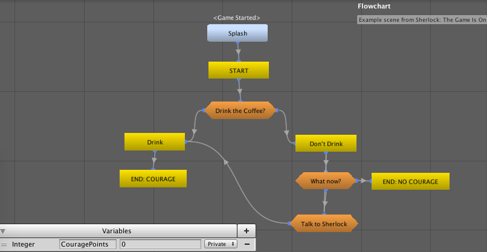
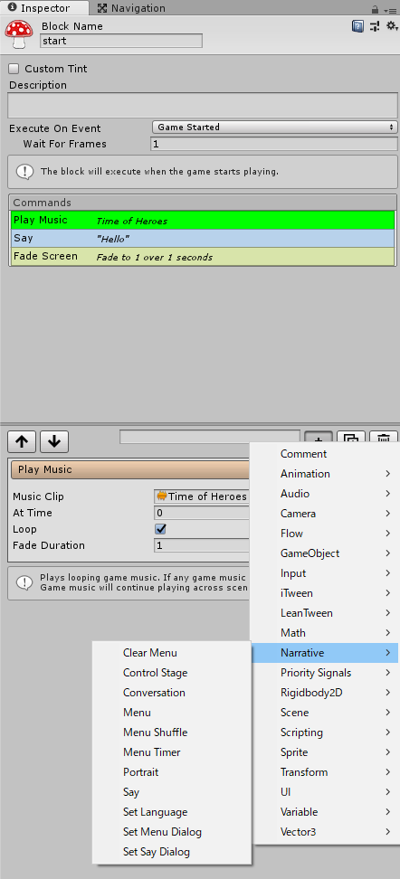
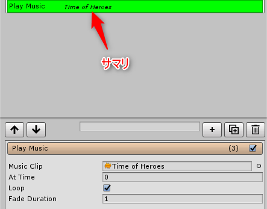
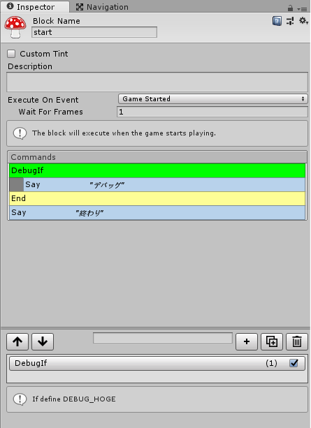

ビジュアルノベルアセットFungusにコマンドを追加してカスタマイズする
この記事はUnity アセット真夏のアドベントカレンダー 2018 Summer!の2日目の記事です。
Fungusについて
Fungus はフリーのビジュアルノベルアセットで、高機能・高評価のアセットです。
簡単な概要についてはフリーのビジュアルノベルアセットのFungusが便利で紹介しています。
また、応用として、フリーのビジュアルノベルアセットFungusを使ってRPGのイベントを作る でも紹介しています。
概要
Fungusはビジュアルノベルアセットですが、RPGの会話機能に使ったり、フローチャートの機能を使ってイベントを制御したりすることができます。

Fungusのコマンドは以下のようにたくさん用意されていますが、独自のコマンドを追加することにより、プロジェクトに適した使い方ができます。

コマンドの追加方法
コマンドのソースはFungus/Scripts/Commandsに配置されています。
例えば、音楽を再生するPlay Musicコマンドを抜粋すると以下のようになっています。
[CommandInfo("Audio",
"Play Music",
"Plays looping game music. If any game music is already playing, it is stopped. Game music will continue playing across scene loads.")]
[AddComponentMenu("")]
public class PlayMusic : Command
{
[SerializeField] protected AudioClip musicClip;
[SerializeField] protected float atTime;
[SerializeField] protected bool loop = true;
[SerializeField] protected float fadeDuration = 1f;
public override void OnEnter(){
var musicManager = FungusManager.Instance.MusicManager;
float startTime = Mathf.Max(0, atTime);
musicManager.PlayMusic(musicClip, loop, fadeDuration, startTime);
Continue();
}
public override string GetSummary(){
if (musicClip == null){
return "Error: No music clip selected";
}
return musicClip.name;
}
このソースからわかるようにCommandクラスを継承したクラスを作成し、CommandInfoを追加することによって、コマンドとして認識されるようです。
CommandInfoの第一引数がカテゴリ、第二引数が表示名、第三引数がヘルプのテキストです。
クラスのメンバにSerializeFieldを追加した変数はInspectorから設定できるようになります。
OnEnterメソッドが実際にコマンドとして実行されるメソッドです。最後にContinue()を呼ぶことにより、次のコマンドに遷移します。
GetSummaryメソッドを実装するとコマンドリストに表示されるサマリを変更できます。Play Musicに関してはAudio Clipがあればその音楽ファイル名を表示しています。
もし、プロジェクトで独自のSoundManagerクラスなどを実装している場合、このPlay MusicやPlay SEを参考に作り直すと良いです。
ちなみにFungusはデフォルトだと音楽再生などをするとFungusManagerというDontDestroyOnloadされたマネージャが生成されます。

if コマンドを追加する
コマンドの中でもifは特殊なコマンドです。
ここでは仮にDEBUG_HOGEがdefineされていたらifが成立するようなデバッグ用のif コマンドを作ってみます。
CommandクラスではなくConditionを継承し、bool EvaluateCondition()と bool HasNeededProperties()を実装すればif コマンドが作れます。
できたのが以下です。EvaluateCondition()の返り値がtrueだとif内に入ります。
HasNeededProperties()についてはこれがfalseを返すと条件に関係なくifの中に入ってしまうので、ここでは常にtrueを返しておきます。
namespace Fungus {
/// <summary>
/// If the test expression is true, execute the following command block.
/// </summary>
[CommandInfo("Flow", "DebugIf", "If define DEBUG_HOGE")]
[AddComponentMenu("")]
public class DebugIf : Condition {
protected override bool EvaluateCondition() {
#if DEBUG_HOGE
return true;
#else
return false;
#endif
}
protected override bool HasNeededProperties() {
return true;
}
}
}

まとめ
Fungusはオープンソースでもあるのでソースコードが見やすく、他の人が拡張しやすいように設計されています。
そのため、今回のようにコマンドを追加したりして、自身のプロジェクトに合うようにカスタマイズするととても便利になります。
ただ、あまり本体のコードを書き換えるとバージョンアップに対応できないので注意が必要です。
私は2017年9月からVer.3.6を使用していますが、今回の検証のためVer.3.9.1をダウンロードしたところ、コマンドが増えていたりとバージョンアップは頻繁に行われているようです。
使用したバージョン
- Unity 2018.2.0f2
- Fungus 3.9.1